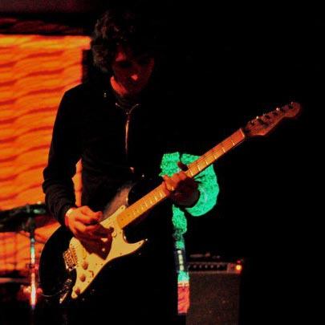
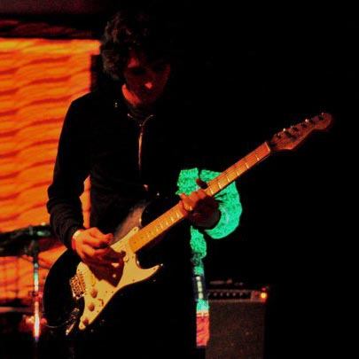

Hard Puncher
Drum and bass, punk rock based out of Denver, CO. I play drums and my friend Manny Black plays bass.
Destroyer - Song about Conan the Barbarian/Destroyer and Crom.
Djinni - I thought this was about the movie Aladdin, but it's actually about alcoholism and mythic creatures.
The City - Reed Richards lived forever, became a villain.